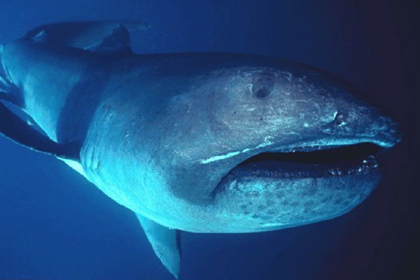
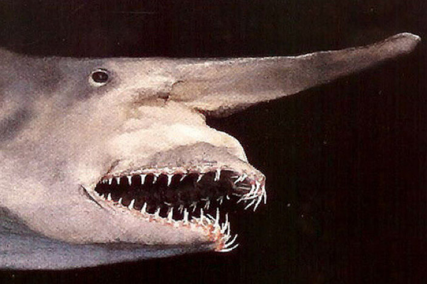
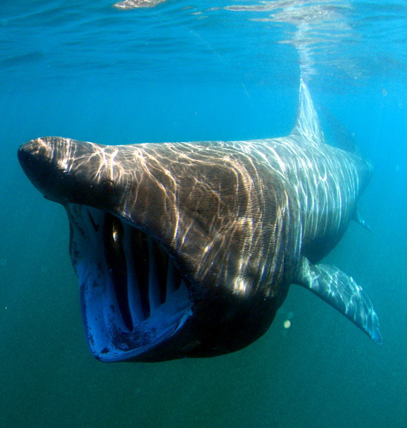
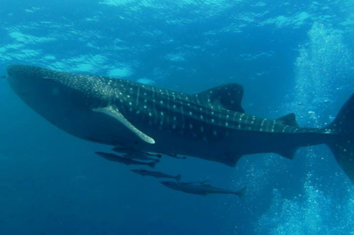
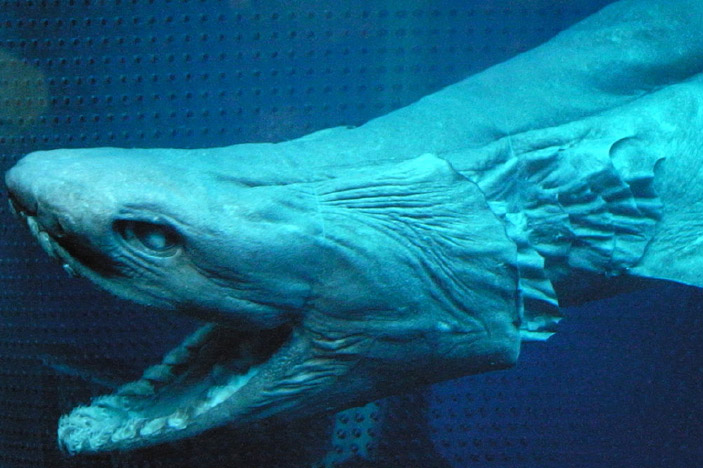

- Megamouth Sharks
Megamouth sharks are one of three filter-feeding sharks,
meaning they only eat plankton.
Despite their large bathtub sized mouths
that can swallow a whole person,
they’re very docile and extremely rare. - Goblin Shark
Goblin sharks are sometimes called the “living fossil”
since they are the only surviving
members of their family, mitsukurina,
and it dates back to 125 million years ago. - Basking Shark
Basking sharks are the second largest fish
in the world. Adults can grow between
6 – 8 m long, and their mouths can
open to 1 metre wide. They have tiny
hooked teeth and gill rakers
that they use when they filter feed. - Whale Shark
Whale sharks are one of the largest
fish in the world. They can grow up
to 12 m in length, meaning they’re as
long as bus. Their mouths can open 1.5 m
wide and have rows of over 300 teeth,
which they only use to catch plankton. - Frilled Shark
Frilled sharks are extremely rare serpent-like
deep-sea sharks. They can live at
1500 m below the surface and
can grow to over 2 m long.
Their mouth is lined with 25
rows of backward-facing,
trident-shaped teeth.